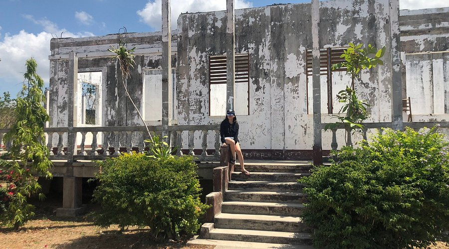
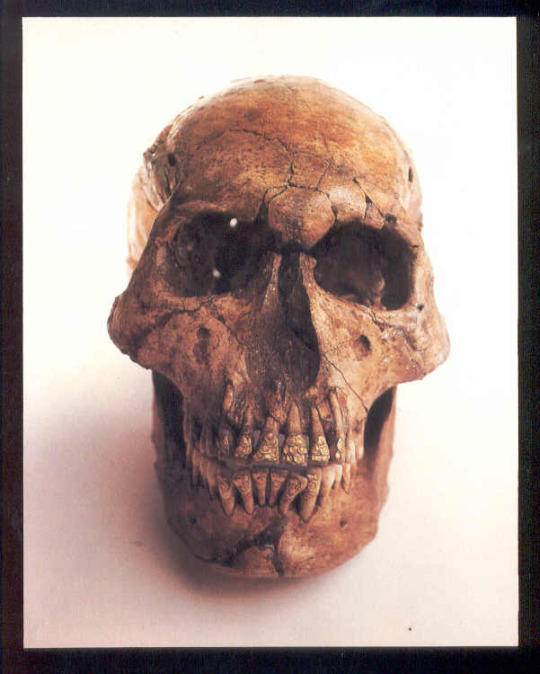
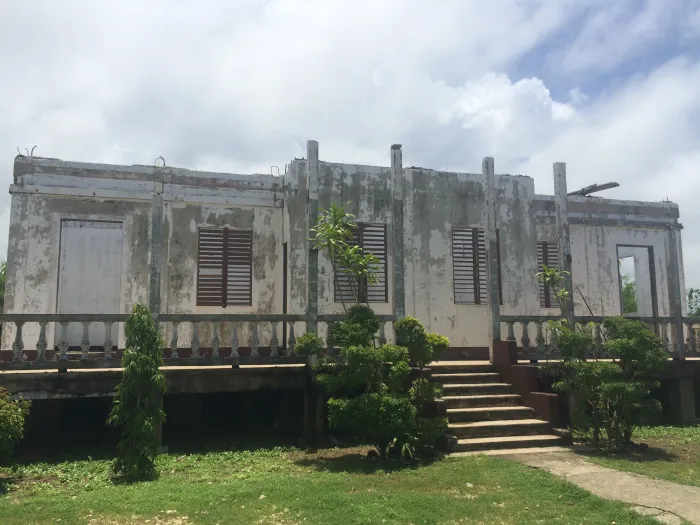

The Bolinao Heritage Museum is a local cultural institution located in Bolinao, Pangasinan, Philippines. It is dedicated to preserving and showcasing the town’s rich archaeological, historical, and ethnographic heritage, serving as a gateway for visitors to learn about Bolinao’s deep cultural roots and precolonial history.
Fun Facts
- Displays ancient burial jars and trade ceramics.
- Shows evidence of early trade with China and Southeast Asia.
- Preserves artifacts discovered in nearby caves.
Historical Background

The museum was founded as part of local efforts to safeguard artifacts unearthed from archaeological digs in Bolinao, including finds dating back to pre-Spanish times. These discoveries offered rare evidence of early trade relations between native Filipinos and neighboring Asian cultures, highlighting Bolinao’s role as a coastal trading hub.
Collections and Exhibits

The museum’s exhibits feature precolonial pottery, shell ornaments, Chinese porcelain, and burial artifacts, with the Bolinao Skull—a human skull decorated with intricate gold dental ornamentation—serving as its most famous piece. Additional displays present ethnographic materials that document traditional fishing, weaving, and religious practices.
Cultural and Historical Significance
Beyond being a repository of artifacts, the Bolinao Heritage Museum plays a key educational role in the community. It partners with schools and local historians to promote awareness of Bolinao’s contributions to Philippine heritage, emphasizing cultural continuity and regional identity.
Visiting Information

The museum is located near the town center of Bolinao and is accessible by land travel from major cities such as Dagupan and Alaminos. Visits typically coincide with heritage tours that include the town’s historic church, lighthouse, and natural attractions.
One of the most fascinating discoveries was a centuries-old skeleton buried with ornaments—revealing that early Pangasinenses practiced elaborate burial traditions long before colonization.